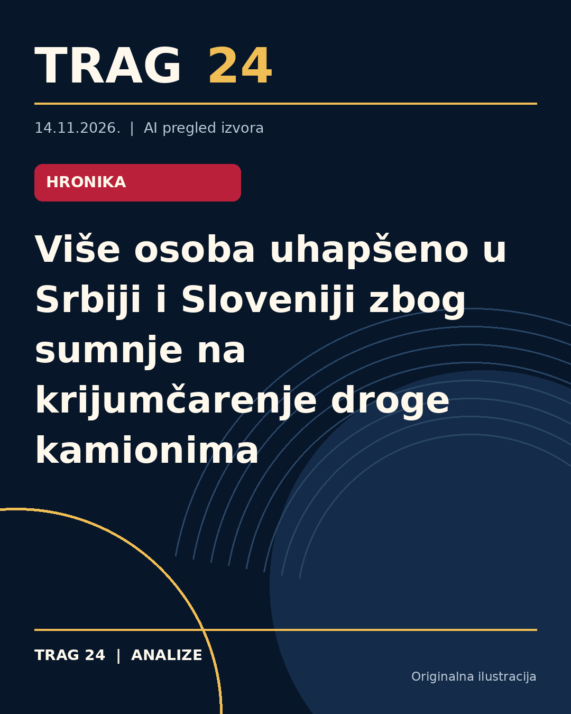

Više osoba uhapšeno u Srbiji i Sloveniji zbog sumnje na krijumčarenje droge kamionima

ŠTA SE DOGODILO
Policije Srbije i Slovenije u koordinisanoj akciji uhapsile su šest osoba zbog sumnje na udruživanje radi vršenja krivičnih dela i nepravilnosti u prometu narkotika. Tri osobe su pritvorene u Srbiji, dok su tri uhapšene u Sloveniji. Za još dve osobe se traga. Osumnjičeni se dovode u vezu sa organizovanom kriminalnom grupom koja je, navodno, koristila kamione registrovane na firme za međunarodni drumski prevoz za krijumčarenje droge.
HRONOLOGIJA
Prema informacijama MUP-a, aktivnosti kriminalne grupe obuhvataju osnivanje firmi u više država, uključujući Hrvatsku, Mađarsku, Slovačku i Srbiju, kroz koje su kamioni opremljeni bunkerima u kabinama za krijumčarenje narkotika prevozili drogu sakrivenu ispod regularnih tovarnih delova. U drugoj polovini 2025. godine na teritoriji Francuske uhapšeni su vozači osumnjičeni za prevoz droge iz Španije, gde je zaplenjeno 471 kilogram hašiša i 15 kilograma marihuane. Takođe, u maju 2026. godine slovenačka policija je zaplenila kokain i novac prilikom primopredaje u Sloveniji. Tokom istrage sarađivale su policijske službe i tužilaštva iz više zemalja, koristeći različite bezbednosne mreže i kanale komunikacije.
ŠTA NAVODE IZVORI
Ministarstvo unutrašnjih poslova Srbije objavilo je da su u Srbiji uhapšeni S.Đ., S.K. i A.K., a u Sloveniji A.J., S.Z. i M.J., dok se za još dve osobe traga. Istražitelji navode da su u kamionima pripremljeni specijalni bunkeri u kabini za skrivanje droge. Takođe, ranije hapšenja i zaplene droge u Francuskoj i Sloveniji povezane su sa ovom organizovanom kriminalnom grupom. Svi uhapšeni u Srbiji su uz krivične prijave privedeni Tužilaštvu za organizovani kriminal. Istraga je sprovedena u saradnji sa pravosudnim i policijskim organima iz Slovenije, Francuske, Mađarske, Hrvatske i Austrije, uz korišćenje infrastruktura kao što su EUROPOL i EURODŽAST.
ŠTA JE POTVRĐENO
Potvrđeno je da su uhapšene osobe povezane s organizovanom kriminalnom grupom koja se bavi krijumčarenjem opojnih droga. Postoje osnovi sumnje za krivična dela udruživanje radi vršenja krivičnih dela i neovlašćenu proizvodnju i promet narkotika. Policijska i pravosudna tela u Srbiji i Sloveniji zajednički istražuju slučaj, a hapšenja su rezultat međunarodne saradnje i razmene obaveštajnih podataka. Zaplenjeni su hašiš, marihuana i kokain tokom prethodnih istraga koje su povezane sa ovom kriminalnom grupom.
ŠTA NIJE POTVRĐENO
Nije potvrđeno koji je tačan obim krijumčarenja niti koji su konkretni motivi i uloge pojedinih uhapšenih u toj mreži. Takođe, nema dostupnih informacija o eventualnoj umešanosti šire mreže niti o posledicama po druge države. Nema zvaničnih podataka o uslovima pritvora ili daljem toku procesa protiv uhapšenih osim da su privedeni Tužilaštvu za organizovani kriminal.
ŠTA OSTАJE OTVORENO: Ostaje otvoreno da li će biti otkriveni dodatni detalji o mreži krijumčara i uključenosti drugih međunarodnih aktera. Takođe, nije poznato kada će biti dostupni dalji podaci o sudskim epilogima ili mogućim novim hapšenjima u ovoj istrazi. Još uvek se traga za dve osobe koje se dovode u vezu sa ovom organizacijom.
Izvori
- https://www.danas.rs/vesti/drustvo/sestoro-uhapseno-u-srbiji-i-sloveniji-zbog-krijumcarenja-droge-kamionima/
- https://insajder.net/prenosimo/mup-hapsenja-u-srbiji-i-sloveniji-zbog-krijumcarenja-droge-kamionima-zaplenjeni-hasis-marihuana-i-kokain
- https://n1info.rs/vesti/srpska-policija-uhapsila-vise-clanova-organizovane-kriminalne-grupe-zbog-krijumcarenja-droge/
Ova analiza je pripremljena uz pomoć veštačke inteligencije na osnovu javno dostupnih izvora. Navodi izvora nisu nužno nezavisno potvrđeni.